9月24日，导师发给我一篇论文让我9月26日组会时汇报，题为：Sensor-Augmented Neural Adaptive Bitrate Video Streaming on UAVs。由于国庆放假以及组会上各种状况，一直拖到10月19日才汇报完，本篇论文是我研究生期间正式学习并汇报的第一篇文章，借此行文以作纪念的同时，一并记录学习内容，便于后日回顾。

前言
本文是华中科技大学一个团队于今年6月发表在IEEE多媒体会刊(IEEE Transaction on Multimedia)上的一篇论文，主题是无人机上流媒体传输，看了下这个团队里“大牛”Qian Zhang之前的学术成果，主要方向是物联网，也在多媒体会刊上发过一些与传感器研究相关的论文，所以本文的参考价值还是蛮高的。
背景
目前，无人机的应用已经遍布民用和军用各个领域，具有极高的商业价值，但是无人机与地面客户端之间进行高清视频传输仍然存在挑战。主要原因是商业无人机的链路传输多采取固定比特率视频流的传输手段，在恶劣的信道条件下，会产生严重的再缓冲(rebuffering)。恶劣的信道条件，在此我们主要关注：无人机与地面接收设备间的空地链路的信道容量产生的剧烈波动，而这一波动源自于无人机动态多变的飞行状态。
思路上：针对固定比特率传输的问题，自然想到用自适应比特率(Adaptive Bitrate，以下简称ABR)的传输策略来应对，而针对无人机动态变化的飞行状态这一特性，该团队决定利用传感器数据来处理相关变化。从这两个思路出发，该团队提出“基于传感器的自适应比特率”算法(Sensor-Augmented Adaptive Bitrate Algorithm，以下简称SA-ABR算法)。
应用ABR算法进行视频流传输的研究还挺热门的，近几年来比较有影响力的研究成果是MIT CSAIL的一个团队在SIGCOMM 17会议上提出的Pensieve算法(论文：Neural Adaptive Video Streaming with Pensieve)。在2017年，网络领域的研究还很传统，和机器学习等前沿领域的互动不够，Pensieve团队倒是开了个好头，提供了新思路并给出实际设计，为后续的ABR算法研究提供了很好的模板，SA-ABR算法也是基于Pensieve算法进行改进而得到的。
系统设计
体系结构

基于Pensieve的改进，故整体体系结构还是采用以网络观测数据作为神经网络的输入，通过神经网络训练，自适应做比特率决策，并返回下一组网络观测数据，循环往复…
视频流传输的网络观测(Networks Observation)主要聚焦于：网络吞吐量，视频播放状态。
SA-ABR算法不同于Pensieve算法的改动主要有两处：
1.在输入数据中加入传感器数据。
2.舍弃Pensieve算法中的一维卷积神经网络(1D-CNN)，改用长短期记忆(LSTM)循环神经网络进行训练。
改动1的理由之前也提到过，对于无人机复杂的飞行状态，应该予以记录并反馈给神经网络，便于更好做决策，改动2的理由则是由无人机视频流的特性决定的，LSTM对于时间序列和长序列的输入表现更好，能够更准确的捕捉输入序列的时间特征，故能提高预测能力。
另外应注意，图中的传感器数据并不是直接作为输入放入神经网络中的，而是经历了一道预处理，具体来说就是将传感器数据进行量化，以消除噪声干扰，后文会讲到具体的量化规则。
飞行状态研究
借助无人机上先进的传感器设备，比如GPS，惯性测量单元(IMU)，就可以得到实时的传感器数据，经过研究，主要的影响因素有三：距离，速度，加速度。其中距离指无人机与地面接收装置间的欧氏距离，加速度是一个三维矢量数据，速度只采用正向飞行的速度，不考虑侧风等干扰因素带来的速度变化。
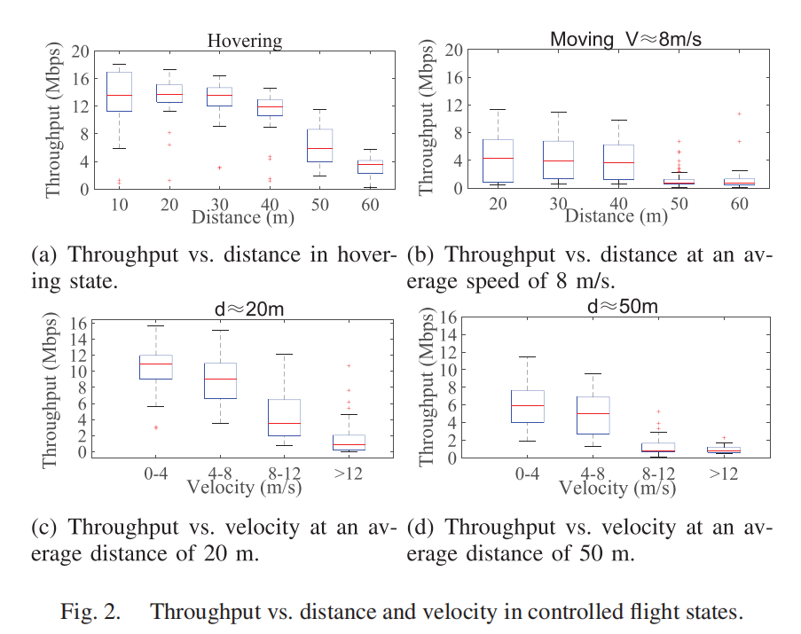
上图是研究在受控飞行状态(Controlled flight states)下，距离与速度对吞吐量的影响。四幅图的纵坐标都是吞吐量，其中图(a)和图(b)横坐标是距离，图(c)和图(d)横坐标是速度。很明显可以得到一个暂时的结论，随着距离和速度的增大，吞吐量明显下降。
图(a)、图(b)分别反映了在无人机悬停时、以8m/s的速度飞行时两种不同的飞行状态下距离对吞吐量的影响；图(c)、图(d)分别反映了无人机距离地面接收设备20m远、距离地面接收设备50m远两种情况下速度对吞吐量的影响。通过两组对照实验，保证了实验结果的精确性。
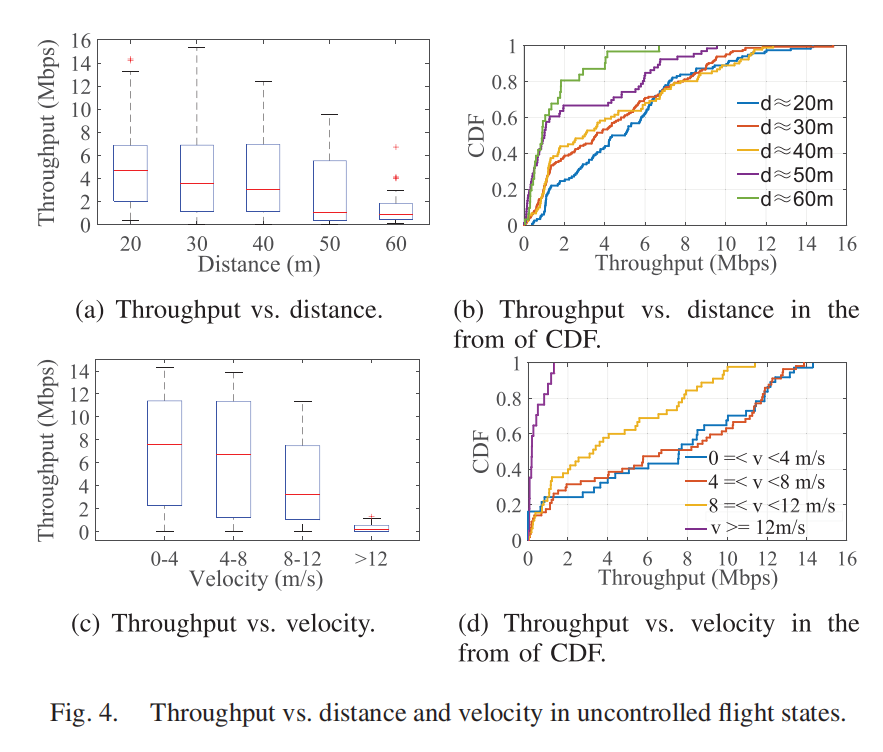
受控飞行状态是在预设条件下进行实验的，为了更贴合实际，作者让无人机进行自由飞行，即非受控飞行状态(Uncontrolled flight states)。如图(a)、图(c)所示，距离与速度的变化对吞吐量的影响也是符合之前实验结论和预期设想的。为了更好表现距离与速度对吞吐量的冲击特性，图(b)、图(d)选用累积分布函数(CDF)将一个绝对的变化转换成了一个概率问题，即：随着距离和速度的增大，吞吐量分布在数值较低区域的概率更大。相对之前的实验结论，这种更复杂的结论表达，对于实际情况的刻画才更为精准。
应注意图(d)中，红色曲线和蓝色曲线的走势基本一致，很多地方甚至有较大重合，说明速度v在0m/s到8m/s的范围内变化时，对吞吐量的影响并不是很大，这一结论在后续有关加速度的实验中会用到。
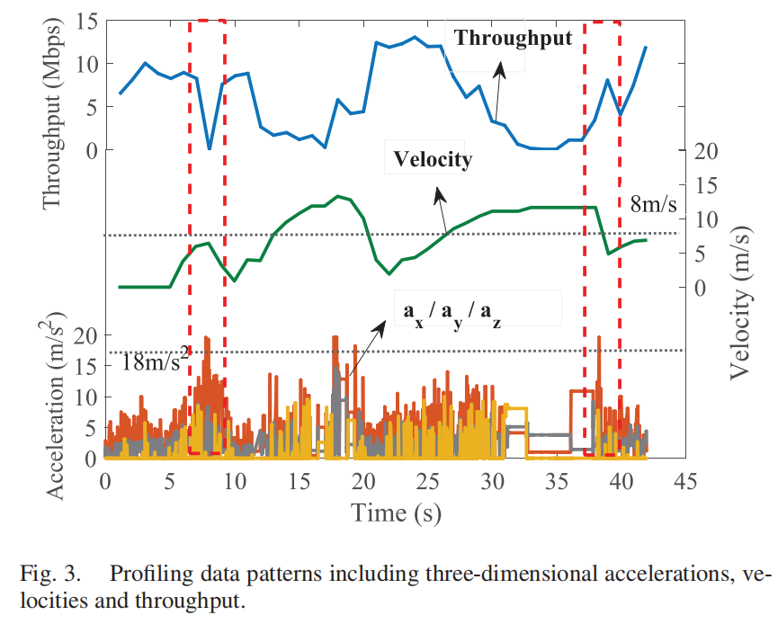
其实对于加速度的研究，更多的是对实验结论的一个补充。首先加速度数据应经过一次筛选，我们只关注于较高数值的变化，因为这更有可能是飞行器真实的加速度变化，而非其他环境干扰因素。
上图中，有两个值得关注的时间点：
1.Time = 8s左右，速度v在虚线，即8m/s的基准线的下方，按照之前的结论，在此区间内变化的速度对吞吐量的影响微乎其微，但是实际现象是吞吐量曲线剧烈波动。
2.Time = 38s左右，速度v先下降，吞吐量明显增大，这很符合我们之前的实验结果，但随后v在基准线以下上升了一点，也是不足以引起吞吐量剧烈波动的变化，但吞吐量明显下降。
结合这两个时间点的反常现象和图表中的其他信息，可以得到一个推论：加速度的变化也会影响吞吐量且二者正相关。
综上实验可得结论：
1.吞吐量的大小与距离的大小、速度的大小均呈反比。
2.加速度越大，对吞吐量的影响也就越大。
3.加速度与距离，速度等影响因子存在冲突问题，引发不规则现象。
4.现实环境贴合非受控飞行状态(Uncontrolled flight states)，传感器数据和吞吐量之间的关系，不再具有明显的单调性，存在误判。
5.综合数据决定吞吐量，传统ABR算法难以找出确定的解析表达式，应采用神经网络来训练数据。
训练方法
基于DRL(Deep Reinforcement Learning，即深度学习DL和强化学习RL的融合)模型的思想来源于Pensieve，即：输入网络观测数据和传感器数据，通过LSTM神经网络系统提取特征数据，再经A-C算法(Actor-Critic)进行决策比特率的选择。
Actor-Critic算法是近年来很流行的一种强化学习算法，它分为两部分——Actor、Critic；通过Actor做决策，Critic做评估，随着训练过程不断深入，Actor的决策表现越来越好，Critic的评估表现越来越准。大名鼎鼎的“AlphaGo”就是基于A-C算法设计的。
为了加快训练过程，SA-ABR放弃使用普通视频客户端进行训练，主要原因在于普通客户端需要在视频下载完成后才能更新DRL策略，这显然不满足我们快速更新策略的设计理念，所以选择用真实模拟的动态视频流来进行训练。
训练中，我们关注于两个视频状态信息：缓冲占用(Buffer occupancy)，再缓冲时间(Rebuffering time)。并通过这两个信息，实时计算新的状态信息，具体计算方式如下：
首先要先了解一个概念，ABR算法都是基于DASH(Dynamic Adaptive Streaming on HTTP)设计的，在DASH体系下，每个视频流都是分成一块一块进行传输的。
我们设一个视频块(Video Chunk)在$t$时刻的下载时间为$f_t$，缓冲值为$b_t$，再缓冲值为$T_t$。
分两种情况讨论：

情况1：$b_t \geq f_t$时，说明缓冲够用，未发生再缓冲，所以$T_t$设为0，并将下一时刻的缓冲值$b_{t+1}$适当减小，保证内存效率。
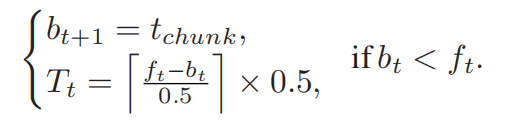
情况2：$b_t < f_t$时，说明发生再缓冲，需要更新$T_t$的值，其中每个视频块的大小是0.5s，故算出$f_t$和$b_t$间的差值并除以每个视频块的大小(向上取整)，就可以得到还需要多少缓冲时间。下一时刻的缓冲值$b_t$适当增大，设置为$t_{chunk}$，保证传输流畅。
另外说明，在上述两种情况中，都出现了$t_{chunk}$这个参数，原文并未给出解释，只是称其为“two-second duration of a chunk”，即固定值为2s。后来在阅读Pensieve论文时，看到Pensieve有一个有趣的研究：如果有一个视频块卡顿超过2s，那么观看者就容易关掉这个视频，所以他们将这2s定义为观看者对视频卡顿的容忍阈值。我猜测，此处的$t_{chunk}$应该就是此意，例如在情况2中，即使增大缓冲，也不要超过2s这一用户的容忍阈值。
训练过程
Pensieve对于训练方法中更新视频状态信息的过程并没有过多描述，SA-ABR给出了详细的更新策略还是值得学习的，在DRL的训练过程上，SA-ABR和Pensieve其实是如出一辙的。
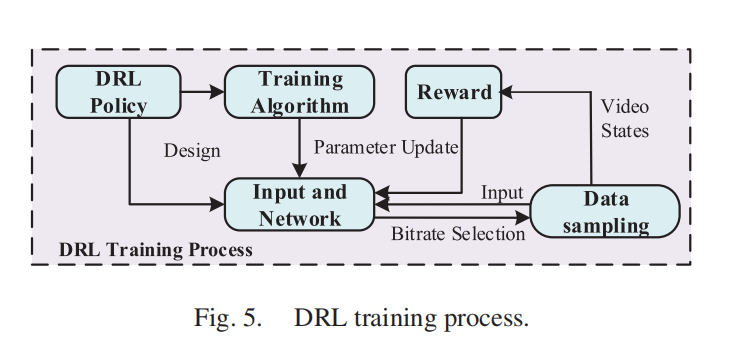
首先经过数据采样，获取视频状态信息，输入神经网络中，根据回报(Reward)，更新算法中的参数，更新DRL的策略，然后选择当前最优比特率，再继续收集数据，采样，分析……循环往复。
预处理过程
预处理是针对传感器数据而言的操作，目的是防止模型预测受到干扰，干扰因素有很多，比如：传感器数据自身就存在不确定性；再比如：在传播过程中容易发生多径效应，即电磁波会以不同路径，不同损耗，不同时间到达，或长或消(发生相长干涉或相消干涉)。
所以预处理的操作是必要的，具体做法是根据传感器数据对吞吐量的影响程度进行量化。
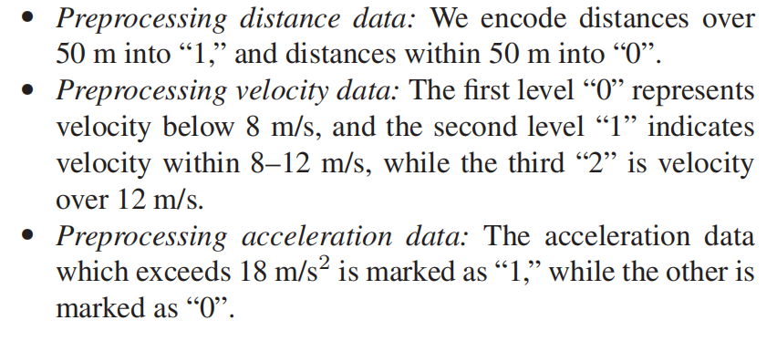
如上图所示，量化对应规则为：
1.距离：$50m$以下，量化为0；$50m$以上，量化为1。
2.速度：$0m/s$至$8m/s$，量化为0；$8m/s$至$12m/s$，量化为1；$12m/s$以上，量化为2。
3.加速度：$18m/s^2$以下，量化为0；$18m/s^2$以上，量化为1。
神经网络设计
定义当前时刻$t$的状态矢量$\vec{S_t}$：
其中：$\vec{u_t}$代表无人机的状态矢量，由距离$d_t$，速度$p_t$，加速度$a_t$组成；$\vec{v_t}$代表视频状态矢量，由缓冲值$b_t$，上一时刻$t-1$的比特率选择$l_{t-1}$组成；$\vec{x_t}$代表过去8个视频块的平均吞吐量。
状态矢量$\vec{S_t}$中$\vec{x_t}$代表过去$n$个视频块的平均吞吐量，Pensieve定义$\vec{x_t}$时，取$n=8$的情况，SA-ABR在沿用了这一选择的同时，在后文的性能评估上对这一点进行了单独的验证，后文还会再提到。
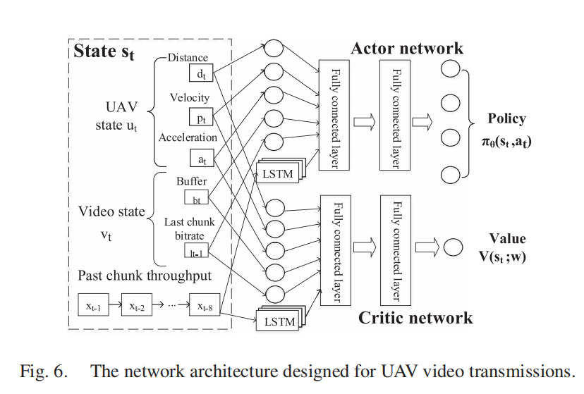
如上图所示，$\vec{S_t}$输入到神经网络中，经过LSTM对其吞吐量序列中的时间特性进行特征提取，再放入Actor-Critic算法中进行训练。
Actor-Critic算法的具体实现过程：
1.Actor网络基于自己的神经网络参数对当前状态输入$\vec{S_t}$做出一次动作(Action)，即比特率选择。
2.Critic网络基于自己的神经网络参数对Actor的这次Action做出一次评判打分(Score)。
3.Actor收到Critic的Score后，会更新自己网络里的神经网络参数。
4.Critic也会更新自己网络里神经网络参数，并更新QoE指标中的回报机制(Reward)。
5.循环往复上述过程，最终Actor的Action越来越好，Critic的Score也越来越精准。
训练算法如下：
其中，$\gamma$为折损因子。
两个系统更新参数的公式如下：
其中，$\alpha$和$\alpha’$为两个网络各自的学习率，$\nabla$是哈密顿算子。
系统评估的QoE指标为：
可见，QoE指标与比特率抉择，再缓冲时间，平滑度相关，且比特率选择越大，再缓冲时间越小，平滑度越高，QoE的数值也就越高。
性能评估
性能评估上，主要分两个方向进行评估，一个是检验“SA-ABR算法是否优于其他ABR算法？”，一个是检验“SA-ABR算法是否受益于LSTM网络和传感器数据”。
SA-ABR算法性能评估
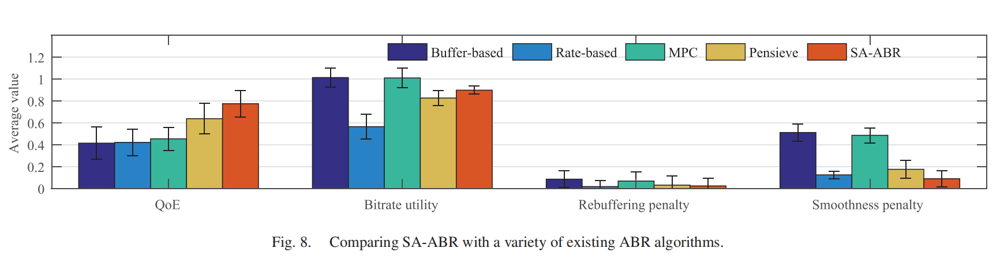
性能评估从QoE，比特率效能，再缓冲，平滑度四个指标进行比较，其中前两者属于奖励项，后两者属于惩罚项。横向对比的ABR算法除了基础的：基于缓存(Buffer-based)和基于比特率(Rate-based)的两种外，还有比较常见的基于模型预测的MPC，以及本文的设计参考——Pensieve。
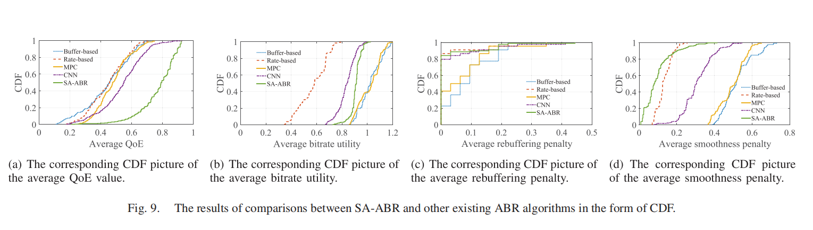
另外还通过CDF展示了五种ABR算法的在这四个指标的平均值上的表现。
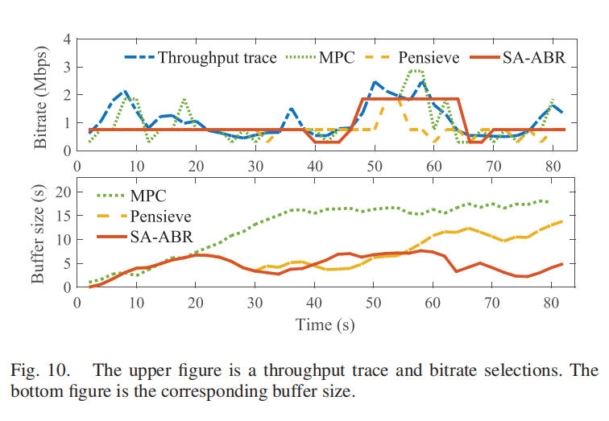
该图的上图中：蓝色曲线代表网络中真实吞吐量的轨迹，对比了MPC，Pensieve，SA-ABR三种算法不同时刻的比特率选择。下图为对应时刻三种算法的缓存值大小。
不难发现，在比特率选择上：MPC虽然最贴合真实比特率，但其波动最大，平滑度最低，用户实际体验可能会很差；Pensieve和SA-ABR算法的平滑度都相对高一些，但Pensieve在个别时刻比较保守，没有准确的预估到网络真实吞吐量，SA-ABR的表现更好。在缓存的对比中：MPC表现较差，Pensieve控制的很好，SA-ABR更胜一筹。
最后的结论：SA-ABR比最好的ABR算法，在整体性能上高出21.4%。
SA-ABR多版本性能评估
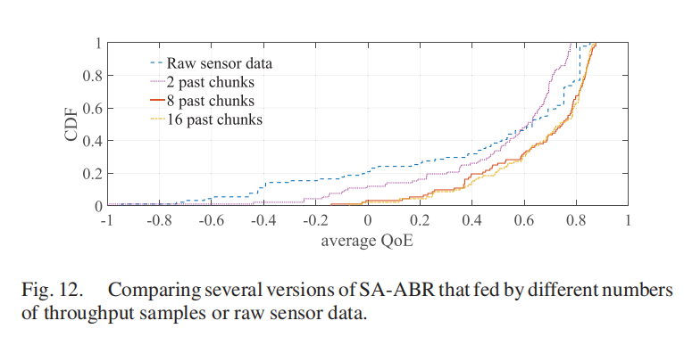
在神经网络设计那一节中，曾经提到过输入的状态序列$\vec{S_t}$中$\vec{x_t}$的选择问题，即：为什么我们要选择用过去8个视频块的平均吞吐量作为输入，而不是更多(16个？)或更少(2个？)呢？
在这张图中不难看出，对于原始的数据，使用过去2个块的平均值所得到的收益会更好，且选择过去的视频块的数量越多，表现就越好。当然并不是越大越好，可以发现，8个块的平均值与选择16个块的平均值所得到的收益曲线几乎是拟合在一起的，所以我们选择用表现最好且用块最少的8个块的平均值作为最终的状态输入。
LSTM和传感器数据的作用评估
在证明了SA-ABR算法的性能优于很多ABR算法后，作者严谨的验证了性能的提升因素是否的确是由LSTM网络和传感器数据带来的？于是进行了如下两组对照：
1.对比CNN+Sensor模型，以验证是否受益于LSTM？
2.对比No Sensor模型，以验证是否受益于传感器数据？
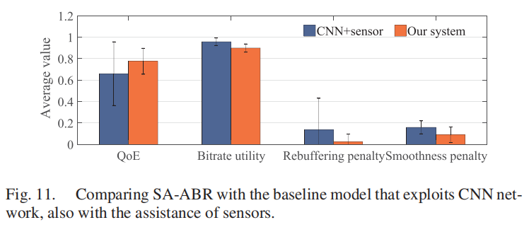
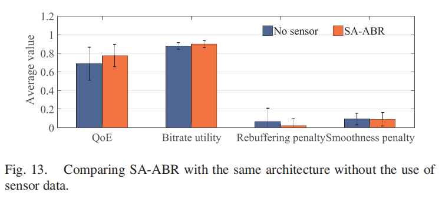
显然，相对于同样使用传感器数据的CNN(卷积神经网络)模型，拥有LSTM网络的SA-ABR算法的性能更好；同样，在对比无传感器数据的模型时，SA-ABR算法性能也更优秀。综上，证明LSTM网络和传感器数据在SA-ABR算法中的确起到了提高性能的作用。
尾声
本文相比于Pensieve算法，最大的改动点就在于使用了传感器数据作为输入，并引入LSTM网络进行训练，从模拟实验的效果上来看，这两点的改动的确是成功的，关于实际应用这一点，作者自述已应用于商业无人机上。
不过文章似乎遗漏了，或者说保密了有关数据集的说明，引用的参考文献也没有介绍相关来源。本文使用的数据集主要有两个：一个是作为关键输入的传感器数据集，一个是真实模拟的海量视频流的数据集。
因为使用的是DJI无人机，所以我在DJI官网上找了下是否有提供传感器数据的系统，最终锁定了DJI无人机自带的Guidance视觉传感导航系统，我猜测应该是来源于此。
再后来我在追根朔源，查看Pensieve论文时，发现Pensieve提到了视频流数据集的来源，除了现实网络环境中的视频，还有人工合成的数据集。SA-ABR作为与Pensieve一脉相承的研究，我猜想SA-ABR的视频流数据应该是沿用了Pensieve的数据集。
除了数据集，本文的QoE指标我也存在一些不同的看法。平滑度作为一个惩罚项是没问题的，关键在于作者认为只要是比特率切换就算一次平滑度惩罚，我认为这对于从低比特率换到高比特率这一利好举措是不太公平的。
总体上来说，本文算是在Pensieve算法基础上做出大的改动并收获了一定成效，提供了很好的思路，值得学习！